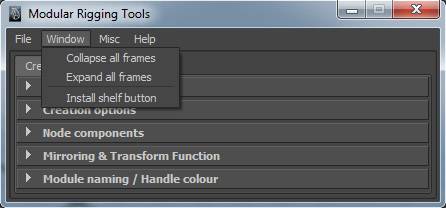
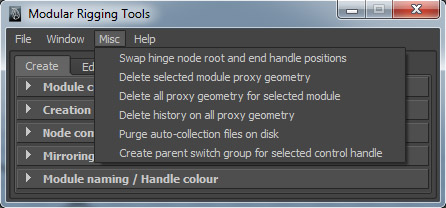
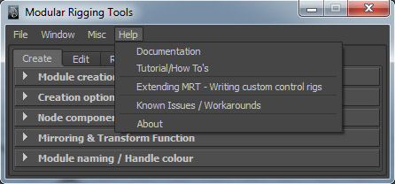
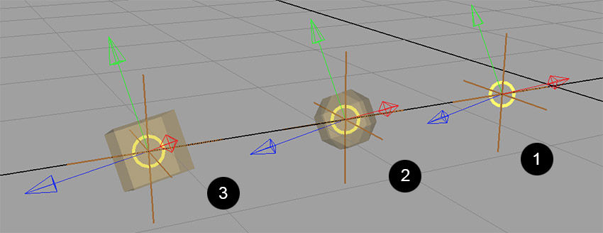
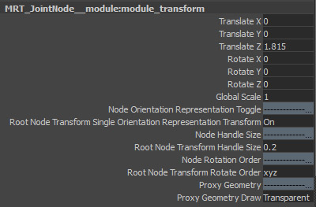

Modular Rigging Tools – Documentation
Here’s a detailed text explaining all the features within Modular Rigging Tools for Maya. It describes the installation under supported operating systems, the user interface, and the modules for rigging characters.
- Section I - Installation
- Section II – The user interface
- Section III – The modules and their attributes
Section I – Installation
Installation on Windows
First, extract the contents of the downloaded archive file mrt.zip to your Maya scripts directory. For example, if you’re running Maya 2014, extract the contents to, C:/Users/<account_name>/Documents/maya/2014-x64/scripts (If C: is your primary drive volume). If you do that, you will see the following contents in your Maya scripts directory.
The scripts directory on your computer could be empty or have existing scripts. You may also have a userSetup.mel or a userSetup.py file, which is okay; if you have neither, MRT will automatically create a userSetup.mel file which is needed.
Installation on Linux
You can use the command line to extract the archive mrt.zip to the Maya scripts directory. Depending on the linux distribution you’re running, you may use a different command compared to what’s shown below. If you’re using Maya 2014, you’ll find the scripts directory at /home/<account_name>/maya/2014-x64/scripts/. In order to extract the zip file, use the following steps. Also, please account for superuser operations, as I’m not listing them here. If you don’t have unzip installed, do it first by doing # yum install unzip at the terminal. Now go to the directory where you’ve downloaded mrt.zip, and then use the following command, $ unzip mrt.zip -d /home/<your user account name>/maya/2014-x64/scripts.
Installation on Mac
You can use the Finder or the terminal to perform the installation. In Maya, get the maya scripts directory using the command internalVar -userScriptDir which will provide a path /Users/<account_name>/Library/Preferences/Autodesk/maya/2014-x64/scripts/ if you're using 2014. Manually unzip the contents of mrt.zip to that directory or use the command line. Use the unzip command like in the linux installation.
After you’re done extracting the files to its destination, execute Maya, and run the mel command MRT. If your version of Maya and the OS is supported, it will confirm and display a window as shown below:
If you receive the confirmation window, Modular rigging tools was successfully installed. To use it, please re-start Maya, and type the mel command MRT to begin.
Section II – The user interface
"Create" tab
The Create tab has options to create modules. Each module in the scene is a representation of a joint or a joint chain, depending on the module type. You can also create a mirrored module pair, each a mirror of the other. You can use it to represent, for example, a pair of legs on a biped. Optionally, along with the modules, you can create proxy geometry, which can be modified to match the character profile.
Module Creation - Basic attributes for the module type, nodes and its initial length.
Module Type :
Joint Node - Create a module with single or multiple joint nodes in a hierarchy, representing a single joint chain. You can manipulate the module node(s) by direct translation to pose the module.
Spline Node - Create a module with controls for posing a joint chain as a spine. Here, you cannot directly translate the module nodes unlike in a joint module, since they’re attached to a spline curve. You’re given controls to modify the curve as you see fit.
Hinge Node - Create a module with three joint nodes in a chain. Here, you cannot directly affect the orientation of the nodes (joints). As you translate the node(s), they maintain their orientation down the chain. The second or the middle node rotates in one axis, also known as the preferred axis for rotation indicated by an arrow curve. This joint chain generated from this module is suitable for use with an IK solver.
Number of nodes - Quantity of nodes in a hierarchy for a module to be created. Consider this as the number of joints in a hierarchy. If the number of nodes is equal to one for a module, it represents a single joint.
Length of the module - The initial length or size of the module at creation. This is the relative distance in world units between the start and end node in a module. This option is set to zero if the Number of nodes option in equal to one (see above).
Create - Generate a module using the specified options.
Undo last create - Remove the last created module in the creation queue. This queue is erased if the MRT window is closed and started again.
Creation options - Options for the specifying the geometric plane on which the module would be created. This plane is used as a reference for building the module node hierarchy, and assigning local axes orientation to each node (to be generated as joint(s)) using the information from Node axes option (see below). The length of the module would be parallel to the specified plane. You also have to keep in mind that if the number of nodes in a module is equal to one, it will always have world axes orientation; in that case, the node axes option would be irrelevant.
Creation Plane :
XY, YZ or XZ - Specify the plane on which the module would be created. Think of this as the “working plane” on which the module nodes would be laid out along its length (see above, Length of the module).
Offset from creation plane - Distance of the module to be created from the creation plane, in world units. This option is useful if you’re creating a pair of mirror modules, and you want to specify the offset between them (half the actual distance).
In the figure below, you can idea about how the creation plane works while creating modules. The joint module with four nodes (1) is created on the ”XY” plane (2) with an offset of 4 world units from the plane. The hinge module (3) is created on the ”YZ” plane (4) with an offset of 3 world units. The spline module (5) is created on the ”XZ” plane (6) with an offset of 5 world units.
Node Axes - The joint axes that will be derived from the nodes in the module. The node "aim" axis is represented by the arrow on the segment curve between two nodes in a module. The "up" and "plane" axes are represented by the node orientation controls (look for the direction suggested by the control curves based on colour). The representation colours for X, Y and Z values are red, green and blue. This option is irrelevant if the number of nodes is equal to one, as its local axes will be set to “world”.
Aim axis - The twist axis for the module nodes. This is the axis along the length of a bone, i.e, when two joints are in a hierarchy.
Up axis - The axis perpendicular to the creation plane, which will guide the secondary world axis orientation for the module nodes.
Plane axis - The axis parallel to the creation plane, which will be the third axis for module nodes (joints).
Node components - Each module has components for representing its node hierarchy, controls for adjusting the node orientation and proxy geometry (optional).
Hierarchy - Arrow shape(s) to represent/indicate the node hierarchy. It cannot be manually transformed. It’s also applied with a colour indicating the aim axis (X for red, Y for green and Z for blue).
Orientation - Controls between two consecutive nodes in a hierarchy which can be rotated along the aim axis to modify the orientation for the parent node. For example, if the module consists of two nodes, this control can be used to modify the orientation for the first node. The second node, being last in the node hierarchy, will inherit the orientation from its parent node.
Proxy Geometry - Optionally, low-resolution polygon geometry can be created along with the modules which can be modified to fit the character profile. By default, the display type for all proxy geometry is set to reference mode.
Proxy geometry - If enabled under "Node components", specifies options for creating module proxy geometry.
Create Bones - Create proxy geometry between every consecutive nodes. Think of it as creating a geometry along the length of a bone, between two joints. This option is disabled if the number of nodes equals one.
Create Elbow - Create proxy geometry on top of every node.
Elbow proxy type - Sphere / Cube - Options for specifying the geometry type to be built for elbow proxy.
Mirror Instancing - If module mirroring is enabled, this option creates a single shape node for each proxies in a mirrored pair of modules. In this case, modifying a proxy geometry on a module on either side will also affect its mirror.
Mirroring & Transform Function - Optionally, a module can be mirrored along the axis perpendicular to the creation plane (on its either side of the plane) to create two copies that share the same type of components and attributes. The position of every object that can be transformed in a module and its mirrored counterpart have the same relative distance from the creation plane. For example, if you create a pair of mirror modules on creation plane ‘XY’, one module will be offsetted at +Z and its mirror at -Z, where the absolute value of this offset from the creation plane is specified by the option, ”Offset from creation plane” (see above). Also, if you modify any attribute on a module, it changes the same attribute on its mirrored module.
Mirror module - On / Off - Toggle creation of mirrored modules.
Transform Function - While assigning control rigs on joint hierarchies created from mirror modules, it is necessary to specify the type of orientation for joints in mirrored joint hierarchies, and the orientation for translate controls, which may be a part of a control rig assigned to these joint hierarchies. For example, if you assign ”Reverse IK control” to both of the joint hierarchies for a mirrored pair of legs with ”behaviour” as the rotation function for the joints, you also want to assign translation function as ” world ” to both of the translate controls for the legs; if you select both of the controls at the same time, you also want to move them together (unless you’ve set the move axis as ”world“).
Translation - This setting is enabled for single, non-mirrored modules as well. It applies to the translate controls in a control rig.
World - Every translate control, part of a control rig assigned to a joint hierarchy created from a module, has world orientation.
Local Orientation - Most of the translate controls (part of a control rig assigned to a joint hierarchy) are applied with orientation according to the local rotation axes of the closest joint from its position. The exception is that in certain cases, you always want a translate control to have world orientation; for example, the base translation control for a spine FK control rig.
Rotation (Mirror only) - This setting can be used when module mirroring is enabled.
Behaviour - Both of the joint hierarchies generated from a pair of mirrored modules have opposite orientation. The local rotation axes for a joint is in opposite direction of its counterpart.
Orientation - Every joint and its counterpart in mirrored joint hierarchies generated from a pair of mirrored modules have same orientation.
Module naming / Handle colour -
User specified name - Name for the module to be created. It is preferable that you name it as the part it would represent in a character rig or skeleton. You can use alphanumeric characters and underscores, but no caps (leftarm, rightleg).
Handle Colour - Maya colour index to be assigned to the node handle(s) in a module.
"Edit" tab
The Edit tab has options to work with module(s) in a scene to make them useful. You can set up parent relationships between modules, in order to represent a character joint hierarchy. You can also inspect the scene module list and its hierarchy. Here, you can delete module(s), duplicate them as well as the ability to rename them.
Module Collections - This frame lists module collection file(s) that are currently loaded and can be installed into the current scene. It also displays the collection description stored with each file. A module collection file contains saved module(s) along with their relationships. As you’ll see later, you can also select and save specific module(s) in the scene as a collection, along with any other module(s) that may be related to it (see module parenting, below), or you can save all scene modules as a single collection file.
Install selected module collection into the scene - Gets all the necessary info from a loaded module collection file which is currently selected in the list, and installs it into the current scene.
Edit description for selected module collection - Modify the module collection description stored in the file for the selection in the list. You will need to enter a new description in the pop-up window.
Delete selected module collection - It allows you to remove/unload a selected module collection file from the list, or delete it from the disk.
Scene modules - Here you can see the list of module(s) currently in the scene. You can "Sort" the list ”Alphabetically“ or ”By hierarchy“. Every module is displayed with its <User Specified Name> (<Module Type>).
If a module is a part of a pair of mirrored modules, it is displayed in italics. You can select module(s) in the scene using the list.
Adjacent to each module name as specified, to its left, there are buttons to control the V visibility of the module in the viewport, P visibility of its proxy geometry, if it has one, and R to toggle reference mode for its proxy geometry. All buttons are set to true for a new module.
Below the scene module list window frame, you have options to increment and decrement the list window frame height using the buttons + and -. You can reset the height to a default value using the button R.
Save selected module(s) as a collection - You can select one or more modules in the viewport or in the scene module list and save them in a collection file. If a module is a part of a mirrored pair, only one of the modules has to be selected and its mirror would be saved along with the collection. You also need to enter a description in the pop-up window for the module collection to be saved.
Include - While saving a set of selected modules as a collection, you can include other modules (which may or may not be selected) in relationship with them. Relationships are set-up using module parenting (see below).
Parent -
All - Collect and append all parent modules (all levels) for the currently selected module(s) to the module collection set to be saved.
Direct - Collect and append only the direct parent modules (one level) for the currently selected module(s) to the module collection set to be saved.
None - Do not append any parent modules for the currently selected module(s) to the module collection set to be saved.
Children -
All – Collect and append all children modules (all levels) for the currently selected module(s) to the module collection set to be saved.
Direct - Collect and append only the direct children modules (one level) for the currently selected module(s) to the module collection set to be saved.
None - Do not append any children modules for the currently selected module(s) to the module collection set to be saved.
Rename selected module - Modify the user specified name for a selected module. You need to enter a new name into the adjacent text field.
You can also rename by modifying a module name in the scene modules list. This feature was previously unsupported, but works under the "open-source" versin of MRT.
Delete selected module - Remove a selected module from the current scene. If that module is a part of a mirrored pair, both the modules would be deleted. You should never try to manually delete a module.
Duplicate selected module - Make a copy of the currently selected module. If the module is a part of a mirrored pair, both the modules would be copied. The pop-up window will display the following options : Enter relative offset for duplication - XYZ distance in world units relative to the position of the original module where its copy would be placed; Maintain parent connections - Create the parent connection for the copied module by getting the existing parent relationship info from the original module.
Module parenting - In this section, you can set-up parent relationship between two modules in a scene. A relationship is indicated by a linear curve with an arrow in the middle connecting the parent module node and the root node of the child module. When joint hierarchies are generated from scene modules as you’ll see later (while creating a character), the relationship type between two modules becomes important. Every module in the scene is converted into a distinct joint hierarchy, similar to the node hierarchy in a module. When a ”Constrained“ parent relationship (represented by a black arrow) is set-up between two modules and when the joints are generated from modules, the root joint of the child joint hierarchy is connected to its parent joint by a DG connection using constraints whose weights can be adjusted. Thus, one can detach\re-attach a child joint hierarchy from its parent joint in a character. When a ”Hierarchical” parent relationship (represented by a white arrow) is set-up between two modules, the root joint of the child joint hierarchy has a DAG relationship with its parent joint. Therefore, using this option, you can combine two more module to form a single, custom joint hierarchy.
< insert parent module node > field - Select a module node as the parent. Use the << button to insert the node name into the field. Press C to clear the field.
< insert child module > field - Select a module (any module component can be selected) as child. It uses the selection to derive the module namespace. Use the << button to insert the module name into the field. Press C to clear the field.
Use the colour guides to correctly identify the fields.
Parent – Create the parent relationship between the two modules.
Unparent - This button is enabled when a module is inserted into the < insert child module > field. It removes its any existing relationship with a parent module node.
Snap parent to child - Place the parent module node at the position of the root node of the child module. There is an exception to this; if the parent module node is a part of a spline module, this option is disabled. A node in a spline module cannot be moved independently.
Snap child root to parent - Place the root node of the child module at the position of its parent module node.
"Rig" tab
The Rig tab has options to convert scene modules into joint hierarchies by creating a character. These individual joint hierarchies are connected by DG connections (constraints) or DAG relationships (see above for module parenting). Together, all joint hierarchies can be transformed by a character root control (blue-red coloured, cross-shaped curve, with name ROOT_CNTL), and with its parent, world control (grey coloured, curve shape with four arrows, with name WORLD_CNTL). You can also save all the joint hierarchy configuration in a character in a character template file, which can be re-used. After that, you can apply single or multiple control rig(s) to a joint hierarchy in a character. For example, you can select a joint hierarchy for a leg in a biped, which will automatically display a set of control rigs that can be applied to it. Finally, you can set-up parent target(s) for controls in an applied rig.
Below - Scene organization for a character. All components are placed under a main group named after the character name hans. All joint hierarchies are distinct and grouped individually under <characterName>|joints. If you’re using a geometry that’ll be skinned to the character joints, place it under <characterName>|geometry|skinGeometry. If you want to select all the joints for skinning at once, use the selection set MRT_<characterName>_skinJointSet. All proxies are placed under <characterName>|geometry|proxyGeometry. If you’ve other meshes such as for blendshapes, you can place it under <characterName>|misc|deformers. You can override the visibility/selection states for these groups using the display layers that are created along with the character.
Character creation -
Create character from scene modules - Gather all information from scene modules along with their parent relationships and convert them into joint hierarchies. If two modules have hierarchical parent relationship, they will result in a single joint hierarchy unlike a constrained parent relationship. Any proxy geometry that may exist along with the scene modules will be preserved.
Revert current character to modules - Delete the current character in the scene and re-install its module(s). Any control rig(s) that may have been applied to joint hierarchies for the character would be removed as well.
Character name (no underscore) - Input text field to provide a user specified name for the character to be created.
Character templates and Control rigging - Options for working with character templates and attaching/detaching control rigs to character hierarchies.
Save character template from scene - Save the current character configuration in the scene with all its joint hierarchies to a file. You can only save a character template before applying a control rig to a joint hierarchy in a character.
Templates - This frame lists character template file(s) that can be installed into the current scene. Only one character can exist in a scene; you cannot install a character from a template file into a scene that already contains another character; you need to create a new scene. Also, along with each character template file, you can also view its description.
Install selected character template - Install selected character template file into a new scene.
Edit description for selected character template - Modify the character template description stored in the file for the selection. You will need to enter a new description in the pop-up window.
Delete selected character template - It allows you to remove/unload a selected character template file from the list, or delete it from the disk.
Control rigging - This frame lists control rigs that can be applied/attached to a selected joint hierarchy. To view a detailed explanation of how control rigging is applied to character joint hierarchies, visit the page here.
Click to view available control rigs for character hierarchies - Opens a window describing all available control types and their methods. If custom user defined control classes are available, they will override the description of their built-in super classes.
Attach Rig - Select and apply an available control rig to a selected joint hierarchy.
Detach Rig - Select and remove an attached control rig from a selected joint hierarchy.
You can attach multiple control rigs to a joint hierarchy in a character. Suppose you’ve applied a number of rigs to a leg hierarchy, you can switch the effect of a control rig and the visibility of its controls by changing its attributes on the character root control ROOT_CNTL (see below).
Parent Switching - All control handles in a control rig that’s applied to a character joint hierarchy can have one or more target parent control handles. You can also add character root transform as a parent target. You can switch parent(s) under the channel box attribute ”Target Parents” for a control handle.
< insert control > field - Select and insert a valid control handle for adding / removing target parent(s) to / from it. Use the << button to insert a selection, Clear button to reset the input field.
Parent switch target(s) - A list of current parent target(s) for the inserted control handle and any new parent target(s) to be created that are added, with the suffix "(new)".
Add selected control to target list - Select and add a control handle to the list as a target parent. You can also add the character root transform as the target parent.
Remove All - Clear all target parent(s) from the list.
Remove selected - Remove a selected target parent from the list.
Create / Update parent switch for inserted control - Apply any changes made to the list of parent switch target(s) for the inserted control handle.
The File menu has options and settings to load and save module collection file(s) character template(s).
Auto-load settings for module collection(s) -
Preserve and load current list at next startup - This option saves an internal reference to all currently loaded module collection file(s) for the ”Module collections” list, and re-loads them in the list the next time MRT is executed.
Load new saved collection(s) to current list - Add any new module collection files(s) that may be saved to the ”Module collections” list.
Load module collections from directory -
Clear current collection list before loading - While loading module collection file(s) from a directory on disk, clear the current list for ”Module collections“.
Load collection(s) from directory - Load all module collection file(s) from a directory (you have to select a directory on the next pop-up window).
Load module collections selectively -
Clear current collection list before loading - While loading one or more module collection file(s), clear the current list for ”Module collections“.
Load collections(s) - Select and load one or more module collection file(s) from disk.
Settings for loading character templates(s) -
Preserve and load current list at next startup - This option saves an internal reference to all currently loaded character template file(s) for the ”Templates” list, and re-loads them the next time MRT is executed.
Load new saved template(s) to current list - Add any new character template files(s) that may be saved to the ” Templates ” list.
Clear current template list before loading - While loading character template file(s) from a directory on disk, clear the current list for ”Templates“.
The window menu has the following options -

Collapse all frames - Collapse all frames within the MRT interface.
Expand all frames - Expand all frames in the current tab within the MRT interface.
Install shelf button - Install a shelf button on the currently active Maya shelf tab.
The Misc menu has the following options -

Swap hinge node root and end handle positions - If you’re using a hinge module, you can quickly swap the positions for the root and end transform handles. This allows you to reverse the node hierarchy layout along the length of the module.
Delete selected module proxy geometry - If a proxy geometry for a module is not in reference mode and is not needed, you can delete it using this option. You should not delete it manually. For example, if you’re using a hinge module with proxy geometry to create an arm, you can select an elbow proxy on one end and delete it using this option (at wrist position).
Delete all proxy geometry for selected module - Remove all proxy geometry for a selected module.
Delete history on all proxy geometry - Removes all construction history all for proxy geometries for modules in the scene. This is useful if you edit any proxy geometry. Do not try to manually delete history for module proxy geometry.
Purge auto-collection files on disk - Clears all auto-collection files that are generated while creating characters. These file(s) are only for internal use by MRT and are necessary while reverting a character into scene modules. This option is needed here since I didn’t implement an auto-deletion procedure for these files, and they may take up some disk space over time.
Create parent switch group for selected control handle - Create a parent switch group for a control handle to add parent targets to it.
The Help menu has the following options -

Documentation - View online documentation for MRT.
Tutorial / How To’s – View online tutorial for creating a biped character using MRT.
Extending MRT - Writing custom control rigs - Online guide for extending / writing new control classes with custom control rig methods by a user.
Known Issues / Workarounds - Display a window with a list of known issues with MRT and workarounds.
About - Display MRT version.
Section III – The modules and their attributes
JOINT MODULE
With single node - (1) Without proxy geometry (2) With Elbow proxy geometry, sphere type (3) With Elbow proxy geometry, cube type.

The node handle is represented by a yellow coloured circle handle, which you can select and translate. The node orientation handle is represented by the tricoloured axes curve, which you can rotate to adjust the orientation of the joint that would be generated from it. The module transform handle is represented by the brown coloured locator, and if you select it, you can see a list of custom attributes for the module in the channel box.

Global Scale - To scale the module and its proxy geometry.
Node Orientation Representation Toggle - Toggle visibility for the orientation handle for node(s) in a module.
Node handle size - Adjust the size of the node handle(s). This value is used to calculate the radius of joints to be generated while creating a character.
Node Rotation Order - Set the rotation order for the joints, which will be converted from nodes while creating a character.
Proxy Geometry Draw - If the module contains proxy geometry, this enum attribute adjusts the draw style for the proxy geometry in the viewport. Options are ”Transparent” and ”Opaque“.
With multiple nodes (two or more) - (1) Joint modules with and without proxy geometries. You’ll notice that each of the four modules have node handles (yellow circles), hierarchy representations (red arrow for X as aim axis) and orientation representation controls to adjust node orientations (green and blue curve controls, for Y and Z axes). (2) Modules are converted to joint hierarchies after creating a character. (3) Local rotation axes for the joints, showing joint orientations.
Below - Module transform and its custom attributes for toggling and adjusting module components. Selecting the module transform displays the module attributes in the channel box.
SPLINE MODULE
With five nodes (min # of nodes) - (1) Spine module with and without proxy geometries. Proxies can be modified at any time. The position of module nodes (black coloured circles) are affected by translating the cube-shaped control curves. The spline module has two module transforms, “start” and “end” (dark and light brown coloured squares). You can access the module attributes in the channel box by selecting the “start” module transform. (2) Modules converted to a character. You can see the local orientation of the joints that are generated.
Spline module attributes -
Select the ”start” spline module transform (dark brown square) to view attributes in the channel box. The first custom attribute ”Global size” scales all the control representations (see below).
Below -
Left : The tri-coloured axes curve shape represents the orientation for the spline nodes. You can modify the default local / object orientation for the nodes by changing the value for “Axis Rotate“. This rotates the orientation representations along the aim axis.
Right : You can toggle the visibility of the orientation representation for nodes by changing the enum attribute “Node Orientation Info“.
Below -
Left : You can modify the orientation type for the module nodes by changing the enum attribute “Node Orientation Type“. By default, its value is set to ”Object“. Changing the value to ”World” sets world orientation for all module nodes. Note that for world orientation type, the attribute
“Axis Rotate” has no effect and gets hidden.
Right : The attribute “Node Local Orientation Representation Size” can be used to modify the size of orientation representations.
At times, you may notice that one or more orientation representations may get reversed (1) as you adjust the profile of the spline module curve to position the nodes. This may or may not be desirable for you, but if it’s not, you can select the affected orientation representation curve (2) and access its channel box attribute, ”Tangent Up Vector” (3) and modify the default value from “Original” to “Reversed”. This will correct the orientation representation for the node as desired (4). See below.
HINGE MODULE
This module consists only of only three nodes. Below, you can see a group of hinge modules with and without proxy geometry. The yellow coloured circles are node handles. This module has representation curve guides which assist in placing the middle node handle accurately. For example, if you’re creating an arm, you can use the hinge module to build the lower and upper limb of equal length. It also has (1) hierarchy representation curve arrows (red for X as aim axis) (2) Hinge axis representation arrow (blue for Z as the hinge axis, green for Y as up axis) (3), (4) Middle node position guide curve and aim, together they assist in aligning the middle or hinge rotation node (joint) with the mid-point aim (4) at the distance between the first and last module nodes. The preferred direction of rotation for the joint generated from the middle / hinge rotation node is represented by the curve arrow (5) (blue for rotation in Z axis). Further below, you can see the joints (with local rotation axes) that are generated after creating a character.
Select the module transform for the hinge module to see the module attributes.
Below -
Left : The enum attribute “Hinge Orientation Representation Toggle” turns on/off the visibility for hinge axis representation arrow and hinge preferred rotation representation arrow curve shapes.
Right : The enum attribute “Module Hierarchy Representation Toggle” turns on/off the visibility for node hierarchy representation arrow shapes. Other attributes can be used to modify the node handle sizes and rotation orders for the joints to be generated from them.